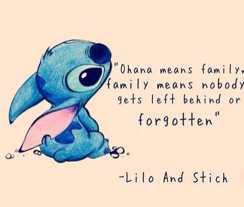

Exploring Values
May 3rd, 2015
 For me, my personal values have always been something that I live my life by. In my opinion, it is our values that define us as individuals and guide our actions. For me, those values are: compassion, friendship, family, helping others, introspection, justice, knowledge, responsibility, stability, and will-power. I try to maintain the significance of these values every day of my life, and they are something I hope to pass on to others around me; whether they be friends, family, or even complete strangers.
All my values are important to me, but above all, the value that stands at the core of my beliefs is family. All things in life come and go, but family is the one thing that is irreplaceable. I believe that family stands at the core of a person's being. As cliche as it sounds, without family I wouldn't be here today, and I mean that in many ways. Growing up, my parents always supported me in my interests. When I wanted to play tennis, put me into group lessons. When I was being bullied in school, they signed me up for martial arts. So when I wanted to make the change to programming, I knew they would support me in that too. I spent 5 years in college studying Biochemistry, but after a year in research I knew it wasn't for me. Without the support of my parents, I would never have had the courage to take the leap into another direction, and for their unwavering encouragement I am forever grateful. I'm determined to become successful in life, not just for myself, but because I owe it to my family to show them how far they've helped me go.
The last time someone asked me for advice, it was about changing jobs. A close friend of mine was in a dead end job he hated with a workload that was killing him, but he didn't feel secure enough to move to another city and find a new job. I actually ended up identifying a lot with his situation, and the advice I gave him was almost exactly the same advice my parents had given me. That's one of the amazing thing about family; their love and support doesn't just end at you, but also extends to those you touch and interact with. My friend is now in San Fransisco, about to start a new job doing something he really loves.
I am always thinking about my values as I go about my daily life, because my values are what shape my actions and decisions. I definitely believe that they can help me mediate stereotype threat if and when I recognize it, because the positivity I generate from my values can more than outweigh the negativity of stereotype threat. Even if I do feel down while at DBC, I know that talking to my family, friends, or fellow cohort members at DBC will get me through it. Hopefully, I can help others too!